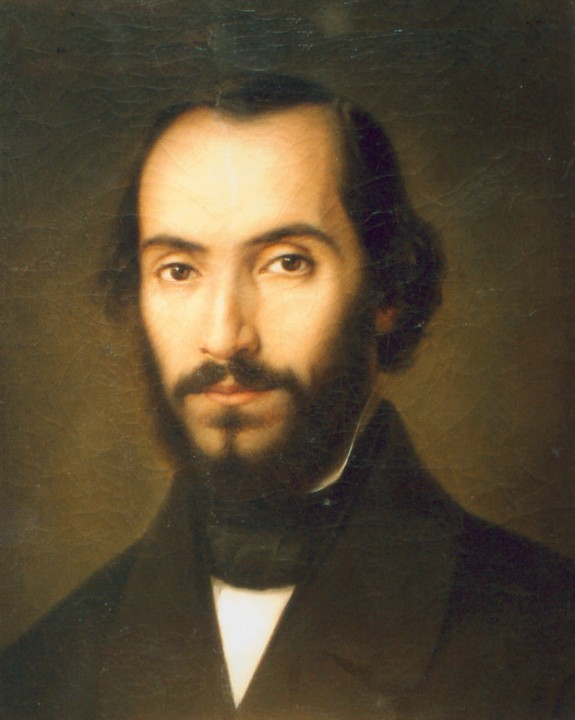
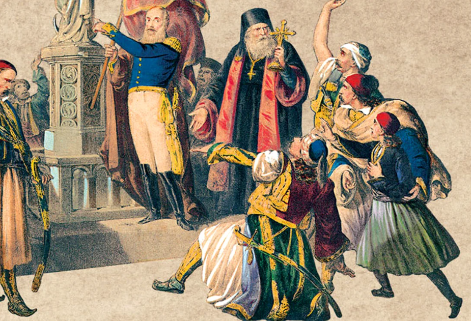

"Revoluţia de la 1821 a
strigat dreptate şi a vrut
ca tot românul să fie liber și egal,
ca statul să se facă românesc."

Nicolae Bălcescu
Introducere
Revoluția de la 1821,
condusă de Tudor Vladimirescu, a fost
unul dintre
sevenimentele care au marcat începutul
procesului de renaștere națională a
României.
Revoluția a avut cauze
naționale, economice și sociale și,
deși a fost în cele din urmă înfrântă,
a adus în atenția cancelariilor marilor
puteri europene situația din Principatele
Dunărene și a determinat Imperiul Otoman
să pună capăt domniilor fanariote.

Pe urmele lui Tudor
Vladimirescu și ale
Revoluției grecești de la
1821.
Biografie
Autorul acestui proiect poartă numele
de Drida Robert vârsta de 17 ani. El este născut la data
de 22 august 2006. Autorul este elev la Liceul Teoretic
“Mihai Veliciu” din orașul Chișineu-Criș, acesta fiind și
orașul unde el locuiește împreună familia lui alcătuită din
părinții lui si o sora mai mare.
Scrise
Revoluția Greacă de la 1821
Autor: Tudor Dinu
Revoluția din 1821 condusă de T.V. Autor: G. D. Iscru